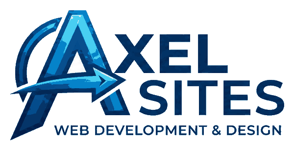

Propuesta · Sitio web
Hoy Triskel solo existe en Instagram: un sitio propio que reserva, cotiza eventos y vende por WhatsApp, ya construido para esta reunión.
AxelSites · Desarrollo y diseño web · Costa Rica
axelsites.com · WhatsApp +506 6316-4765
Documento preparado exclusivamente para Triskel. Montos en dólares.
Qué encontramos
Triskel tiene 16 mil seguidores en Instagram, 4,7 estrellas en Google y casi un menú especial por mes desde que abrió en marzo de 2025. Pero el campo "sitio web" de su ficha de Google apunta solo a Instagram: no hay un lugar propio donde reservar, cotizar un evento o ver la carta completa sin hacer scroll por 63 publicaciones.
Construimos ese lugar. Está listo para mostrarse hoy mismo, en español e inglés, con todo lo que ya publican integrado en un solo sitio.
El sitio completo —menú, cotizador de eventos, reservas y club— ya está armado y funcionando con la información real que encontramos. La reunión sirve para revisarlo juntos y confirmar los datos marcados como pendientes (ver PENDIENTES-CLIENTE.md), no para empezar desde cero.
Encontramos tres números de contacto distintos publicados en 18 meses (dos en la publicación de apertura de Instagram, uno en la ficha actual de Google). Como todos los botones del sitio dependen de un solo WhatsApp, confirmar cuál está vigente es el primer punto de la reunión.
Qué se entrega
Un sitio multipágina, sin dependencias ni mensualidades de plataforma, pensado para que Triskel lo administre por años sin depender de un desarrollador para cada cambio de menú.
Confirmar el WhatsApp vigente, enviar 8 a 10 fotos del jardín y los platillos, y revisar PENDIENTES-CLIENTE.md punto por punto en la reunión de entrega.
Desglose
| Concepto | Monto |
|---|---|
| Sitio web completo — Triskel Café y JardínMenú interactivo, cotizador de eventos, reservas por WhatsApp, club, kit de mostrador y bilingüe | $810,00 |
| Subtotal | $810,00 |
| IVA 13% | $105,30 |
| Total · pago único | $915,30 |
Sin mensualidad ni permanencia mínima. Dominio, hosting y respaldos se coordinan aparte con Triskel.
Este documento resume lo que ya construimos y lo que falta confirmar. Si aprueban el alcance, agendamos la reunión de entrega con PENDIENTES-CLIENTE.md, confirman el WhatsApp vigente y las fotos, y el sitio queda listo para publicarse.